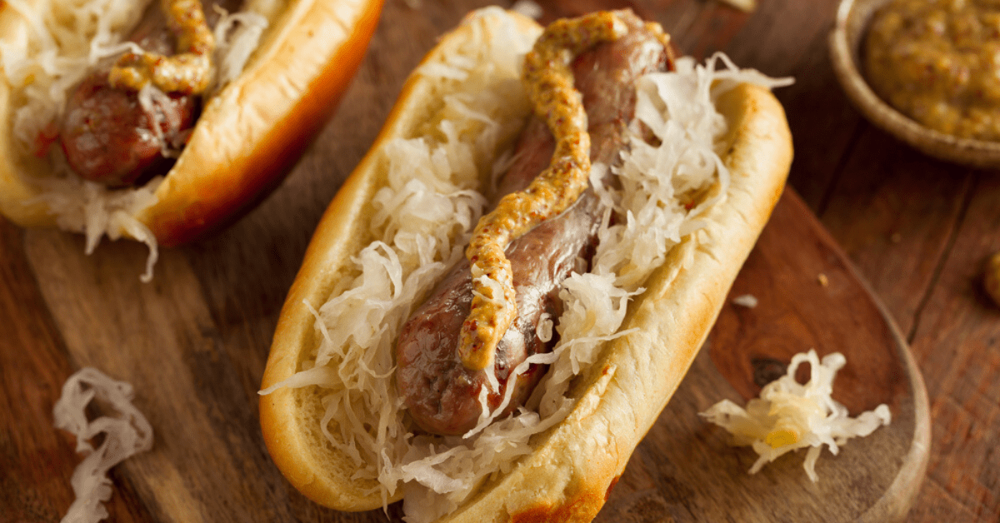

Beer Braised Bratwurst Dogs

Frankfurters are only really good when you're a kid. Once you grow up those horribly processed, pink slime tubes just taste like sweat. I'll just take a regularly processed tube of meat, thanks.
You will need:
- Frying pan with lid
- 6 Bratwurst sausages
- 1 onion, sliced
- Good lager or beer
Directions:
- Fry brats in some oil for about 5 mins, turning frequently. We just want a little browning.
- Take those brats out, toss in the onion and fry till golden and translucent.
- Add those brats right back in, sprinkling in a bit of salt and pepper.
- Pour lager over, enough to halfway submerge the brats. Turn heat down to a gentle simmer.
- Simmer for about 12 minutes, then they should be done. If the sausages split, who cares? It's only you eating it
- Put those sausages in their buns, layer the onion on top, add any desired sauces.
- Don't forget to down that beer. Don't let it go to waste